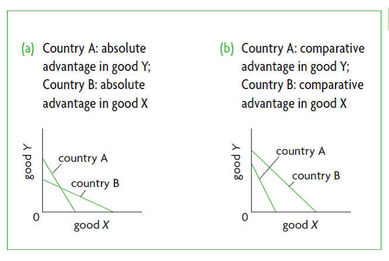

IB Docs (2) Team
IB Docs (2) Team

Annotated extended essay sample 3
Classroom activity
Read the extended essay below, which came from one of my former Economics students. After doing so, apply the extended essay rubric and justify your marks. My comments are on the next page as well as an annotated copy of the EE.
Title: Is medical tourism an area of competitive advantage for Turkish companies?
Word count: 3701 words
Is medical tourism an area of competitive advantage for Turkish companies?
Economics
Word Count: 3701
International Baccalaureate Diploma Programme
Table of contents
| Page number | |
| Contents page | 2 |
| Introduction | 3 |
| Economics analysis | 3 |
| Challenges and other considerations | 12 |
| Conclusion | 14 |
| Appendix 1 | 15 |
| Appendix 2 | 16 |
| References | 22 |
Introduction
Competitive advantage is a general term to denote one rival’s advantages relative to the other rival. This advantage comes from many sources, notably from the cost and speed of production. In economics, two related concepts, absolute advantage and comparative advantage, explain the relative competitiveness of countries against each other in terms of the cost of producing certain goods or services. The country that is more efficient in the production of a good or service (in other words, can produce more under similar constraints) is said to have an “absolute advantage” over the other country. (Mankiw, 2007, p.52)
In a global economy, while it may not always be possible to pinpoint a specific country with literally the lowest cost of production in the world, one can usually identify a set of countries with similar characteristics. For instance, Turkey, like most other developing countries with a large population, has a lower cost of production of healthcare services, mainly due to lower cost of physicians and other health workers. (Medical Tourism in Turkey Portal, “Cost of Medical Treatment in Turkey”, 2017)
Economic Analysis
The fact that Turkey has a lower cost of production may mean Turkey has an absolute advantage over certain countries for this particular product. Sometimes, a country may have absolute advantage in both goods’ production but is relatively more efficient in producing only of them nonetheless, and therefore would prefer to focus the production resources only on that product, and import the other product instead. The country where the product is imported from is said to have a “comparative advantage,” assuming the trade is mutually beneficial, as illustrated in this chart. (Tragakes, 2012, p.359)
Chart: Comparative advantage of countries with and without absolute advantage

Comparative advantage takes into account the opportunity cost of producing one good which then results in not producing the other. This means that the producer who gives up less of other goods to produce Good X has the smaller opportunity cost of producing Good X and is said to have a “comparative advantage” in producing Good X. (Mankiw, 2007, p.53) In short, comparative advantage reflects the relative opportunity costs of countries.The actual cost of production and the opportunity cost together give us the total cost. (Mankiw, 2007, p.268) Whether Turkey can provide health services at a lower total cost than any other country is not a straightforward question, since health production has many subcomponents. Therefore, let us focus on the subcategory of “health tourism” which is emerging as a major sector in Turkey.
To do that, let us first look at tourism as a major industry of the Turkish economy and test Turkey’s absolute and comparative advantages within the context of tourism, health services being one. For that purpose, we can compare two neighboring countries with very similar characteristics, especially regarding tourism: Greece and Turkey.
Leisure tourism in Turkey costs an average British tourist only 4.62 British pounds less per average trip taken, according to the British Post Office’s 2009 survey which was published by the online travel agency aggregator SkyScanner. (SkyScanner, 2009) This means Turkey can serve more British tourists for the same price points as Greece. This can be thought of an example of an absolute advantage over Greece, albeit a very small one.
Now, let us look at health services. According to the Organisation for Economic Co-operation and Development (OECD) statistics database (OECD, “Stats”, 2017), “health expenditures” in real dollars per capita per year was 2,086.70 Euros in the same year (2009) as the British Post’s survey, while the same figure was only 767.60 Turkish liras (meaning 353.90 Euros at 2.1690 EUR/TRY conversion rate) (European Central Bank, 2009) in the same year. (OECD, “Heath Stats”, 2017) This means that average healthcare in Turkey would cost a foreign patient only 17% that of Greece!
I made the following chart to illustrate approximately how Turkey and Greece compare to each other in production of leisure and health services. The x-axis shows production of health services, and the y-axis, production of leisure services.
Illustration: Leisure vs. medical tourism in Turkey vs. Greece
 In leisure activities, Turkey enjoys absolute advantage but only with a smaller difference in cost. In healthcare tourism, it enjoys a much larger absolute advantage. Consequently, Turkey is better off focusing on medical touristic services, while Greece focuses on the leisure side of tourism. Consequently, it is no surprise that there has been an impressive growth in international medical tourism in Turkey in recent years, with many patients travelling to get medical treatment. Most observers agree that this growth will be sustained in the near future, since it relies on significant economic reasons. (Hurriyet Daily News, 2015)
In leisure activities, Turkey enjoys absolute advantage but only with a smaller difference in cost. In healthcare tourism, it enjoys a much larger absolute advantage. Consequently, Turkey is better off focusing on medical touristic services, while Greece focuses on the leisure side of tourism. Consequently, it is no surprise that there has been an impressive growth in international medical tourism in Turkey in recent years, with many patients travelling to get medical treatment. Most observers agree that this growth will be sustained in the near future, since it relies on significant economic reasons. (Hurriyet Daily News, 2015)
Patients generally travel the world for either of the two reasons: to receive higher quality care or lower priced care. These two segments together make up the global medical tourism industry, which is estimated to reach “32.5 billion dollars by 2019 with a compounded annual growth rate of 17.9%” (Marketwatch, 2015) The number of medical travelers from the U.S. alone has grown rapidly in the 2000s and increased to 540,000 patients a year in 2008. At the current annual growth rate of 35%, that figure is expected to surpass 2 million patients a year by next year. (Deloitte, 2009)
Medical travel for lacking access to healthcare is a very old concept. In fact, long-distance travel has been the only way possible if one wanted to receive the best treatment available throughout the human history. The common trade-off for most patients was between higher quality care abroad but with months or years of travelling versus lower quality care at home. In the last century, that trade-off has started coming apart, when similar quality care has become available in many countries but for different prices. Also, it has become easier to travel, as the cost, time, and language differences have been reduced. These reasons together explain the current rapid growth in medical tourism, which is fueled by those seeking cheaper care.
Turkey has been an important beneficiary of this trend. In Istanbul streets, one frequently sees men wearing bandages on their heads due to hair transplant surgeries or rows of rooms with patients speaking in foreign languages in various private hospitals of the city. Certain therapy areas (e.g., ophthalmology, dermatology) and certain types of procedures (e.g., eye sight correction, hair transplant) are better suited than others for medical travel to Turkey due to both costs and quality of service, as published in a recent Bloomberg News article. (Topol, 2013)
Photo: Men wearing hair transplant bandages in Istiklal Avenue, Istanbul
 Daily newspaper Yeni Safak reported in 2015 that the number of visitors that came to Turkey for medical reasons had reached an all-time high of 414,600, up 55% over the preceding year. In fact, “the number of medical tourists visiting Turkey rose gradually from 140,000 in 2003 to a nearly threefold increase last year. Medical tourists left $837 million in treatment expenses in the country.” (ISPAT, 2015)
Daily newspaper Yeni Safak reported in 2015 that the number of visitors that came to Turkey for medical reasons had reached an all-time high of 414,600, up 55% over the preceding year. In fact, “the number of medical tourists visiting Turkey rose gradually from 140,000 in 2003 to a nearly threefold increase last year. Medical tourists left $837 million in treatment expenses in the country.” (ISPAT, 2015)
Moreover, Dr. Bulent Kahyagolu, who I interviewed in my research, said highly specialized areas such as neurology are increasingly part of medical tourism as Turkey provides good value for money (Interview: Dr. Kahyaoglu, 2017).
Turkish government also took notice of the country’s potential and has set up various initiatives to boost the sector. “As part of a plan to introduce tax-free healthcare zones specifically tailored to foreign patients, Turkey’s Ministry of Health intends to increase the number of medical tourists to 500,000 by 2015 and to 2 million by 2023,” according to The Republic of Turkey Prime Ministry Investment Support and Promotion Agency’s website. (Invest.gov, 2015) Moreover, the Ministers of Health, Tourism and Culture, and Finance have all come together and set up the “Health Tourism Association of Turkey” as a portal for information on current state of medical tourism in Turkey. (Saglik Turizmi, 2017) These efforts to promote Turkey for medical tourism appears to be sensible because the country enjoys a comparative advantage in the healthcare industry.
Opportunity cost is central concept to comparative advantage. It is "the cost of what you give up to get it" (Mankiw, 2007, p.268) Opportunity costs go beyond the "explicit costs" but include also the "implicit costs”: cost that are not actual cash outlays. (Mankiw, p.269).
In Turkey, the opportunity cost of treating a foreign patient may be not treating a domestic patient, if a hospital has capacity constraints. However, both of my interviewees have indicated that this may not be the case, thus the opportunity cost of treating foreigners is actually low for an existing hospital. (Interviews: Dr. Kahyaoglu, Dr. Bensusan, 2017)
That does not mean there aren’t significant opportunity costs to consider. Government investment in one industry comes at the expense of the government not investing in other industries. For instance, "Turkey’s Health Ministry intends to increase the number of medical tourists to 2 million by 2023 by introducing tax-free health care zones specifically tailored for foreign patients" (Hurriyet Daily News, 2015), with the tax benefit being valid if they do not treat domestic patients, thus showing a strong focus on the tourism aspect of healthcare.
It is difficult to quantify what the outcome would have been in alternative investments but it is reasonable to argue that medical tourism is a high value added industry with lots of value generation for the country. In fact, both physicians I interviewed said they “are affected very positively by the growth of medical tourism” with Dr. Kahyaoglu adding: “diversity of patients and having to work with cultural differences is a gain for all sides, including the physicians.” (Interview: Dr. Kahyaoglu, 2017)
While Turkey is moving ever to a more services based economy with developments in industries such as medical tourism, many Western nations where the cost of healthcare is much higher have already moved to even higher value added sectors, such as artificial intelligence in Silicon Valley in the U.S. This means even if Western countries had an absolute advantage in healthcare costs (which they don’t based on the OECD statistics database, OECD, 2017), their opportunity cost is higher than Turkey due to having established such high-end industries. Therefore, what Adam Smith once said is still valid that "it is a maxim of every prudent master of a family never to attempt to make at home what it will cost him more to make than to buy." (Mankiw, p.55)
Does that mean Turkey’s total cost of production of healthcare will always stay relatively low? That is hard to know today because better alternative industries for investment may emerge in Turkey, making Turkey’s opportunity cost higher. However, Turkey’s actual cost of producing healthcare (not the opportunity cost) is likely to stay low because the average physician income is substantially lower in Turkey than in the developed nations. Also, regulation is not as strict and there aren’t as many lawsuits regarding medical operations, thus physicians and hospitals don’t feel the need to perform too many redundant operations, keeping the overall costs low. (Interviews: Dr. Kahyaoglu, Dr. Bensusan, 2017)
In my interview, Dr. Bensusan said he did not witness a surge in labor demand as a result of increasing foreign treatments. (Interviews: Dr. Bensusan, 2017) That is because these patients tend to go to relatively expensive private clinics which do not operate at full capacity anyway. Thus, the “marginal cost” of serving these patients is relatively low in Turkey where healthcare is highly separate between private and public practices. Both physicians I interviewed, in different specialty areas, emphasized that quality outcomes are not worse in Turkish private hospitals when compared to developed countries. (Interviews: Dr. Kahyaoglu, Dr. Bensusan, 2017) Thus, medical tourism makes much economic sense from the foreign patient’s point of view.
There may be even more reasons that support the value for money argument, such lower drug prices in Turkey that can explain why getting the same procedure (including the recovery period) in Turkey might make more sense than to do it in one’s own country. According to Dr. Kahyaoglu, both the cost is lower and access to medications is easier in Turkey than most other countries. Turkey has also emerged as a center for high quality, low cost generic drug manufacturers and the largest export hub of pharmaceuticals among the emerging markets. This, it is very well-positioned for inbound medical tourism from the U.S., Europe and the Middle East. (Interview: Dr. Kahyaoglu, 2017)
With Turkish income per capita significantly lower than in Western countries such as the U.K., the average cost of healthcare in Turkey is also significantly lower. (Please refer to “Appendix I” for detailed cost of medical treatment in Turkey versus the U.K.)
A recent article in the British newspaper The Independent tells the story of a man who has flown to Turkey to get a “hair transplant” operation. "In the UK, the places [clinics] are very expensive. So I looked abroad, did a bit of research and this place looked the best. The whole endeavour, including flights, will have cost [me] £2,500, saving about £10,000 on the price tag in Britain," says the man quoted in the paper. (Pitel, 2016)
There is a number of international companies operating as a service provider for medical travelers. Recently, some of these companies joined forces to start online portals, such as Patients Beyond Borders, with the mission “to help connect patients like you locate the highest-quality, most affordable care, and to provide information and advice that helps give you the confidence to make the best choice among your many options.” (Patients Beyond Borders, 2017) According to the physicians I have interviewed (see Appendix II for details on the interviews), many private hospitals in Turkey advertise to foreign patients directly using websites like Patients Beyond Borders. Some even set up their own marketing websites, such as Nova Corpus, which conducts laser eye surgeries for foreigners at a cheaper price in Turkey. (Nova Corpus, 2017) Insurance companies also increasingly realize the cost benefits of high quality-low cost countries such as Turkey, and allow their schemes to cover medical practices there. Both physicians I interviewed said “yes, they do” to the question: “Do you know whether foreign insurance companies cover your foreign patients?” (Interviews: Dr. Kahyaoglu, Dr. Bensusan, 2017)
Challenges and Other Considerations
Given the economic advantage and the availability of investment capital in private hospitals, it is easy to understand why this industry has grown so much in recent years. The growth is not without challenges, of course. There are challenges inherent in the economic model, the offering, the regulatory environment, and some ethical considerations.
The biggest economic risk is a potential sharp rise in the total cost of healthcare in Turkey. Either the actual cost of production of healthcare may increase, as the industry matures and becomes more like Western counterparts with increased regulation, litigation, higher wages for health workers, or the opportunity cost of producing healthcare for investing in medical tourism versus other areas may increase in the future.
Second set of challenges are related to the offering. For Turkey to distinguish itself as a medical tourism country, economic strengths are not always sufficient. The country also needs to gain customer confidence in the quality of the offering, because it is difficult for a patient to take the risk to get treatment in a foreign country. If that psychological hurdle can also be overcome, then there may be logistical problems to be dealt with, such as visas, flight connectivity, language barriers, and others.
Thirdly, governments or international regulatory organizations may impose higher regulatory hurdles and stifle the growth of the industry. Also, foreign countries may impose restrictions on medical travel. While pharmaceuticals and medical devices are strictly regulated, the insurance market and other provision of healthcare are not as strictly regulated at present. For the most part, patients are free to travel wherever they want in order to get medical treatment. There is always some probability that there might be more regulation in the future disallowing certain procedures in certain countries to be paid by insurance companies, or they may be restrictions on travel altogether for various reasons, such as terrorism concerns.
Finally, there are ethical considerations. The chief concern would be the possibility of faster than normal cost inflation in Turkey, which would impair poor populations’ access to health services. If the volume of inbound medical tourism reaches a critical mass, it might end up raising the costs for everyone and make hospitals less accessible for a segment of the population which already suffers from too little access. The focus of major hospitals may shift to foreigners at the expense of the local population.
However, currently it seems to be only private hospitals that are growing the medical travel industry, and these hospitals are already unaffordable for most of the local population. Therefore, the local populations would not be losing access to the public healthcare services, whose primary mission is to serve the middle and low income populations, unless the government allows these public hospitals to serve foreigners, too.
Conclusion
In conclusion, medical travel poses a mutually beneficial opportunity for all: Both the countries that are better off investing in the production of other services (and sending their patients to countries with comparative advantage in medical services) and also the countries that are the beneficiaries of the inbound medical tourism due to enjoying a comparative advantage in that sector. My research shows that Turkey appears to be a country that falls in the latter category of countries with significant economic advantages in medical tourism.
It is furthermore likely that the more the industry grows, the more it will become competitive globally due to the “economies of scale,” which is defined as “the property whereby long-run average total cost falls as the quantity of output increases.” (Mankiw, 2007, p.281) Therefore, if there is sufficiently high demand, setting up hospitals even with the sole purpose of treating medical tourists may be a profitable investment for Turkish companies in the near future.
Appendix 1: A comparison of medical costs between the UK and Turkey

Source: Medical Tourism in Turkey Portal, “Cost of Medical Treatment in Turkey” (2017)
Appendix II: Physician interviews
Subject: “Is medical tourism an area of competitive advantage for Turkish companies?”
Interview Questions – Revised:
- “How many patients do you see in total every year? Roughly speaking, how many are foreigners? From which countries do they come from?”
- “What is the gender breakdown of foreign patients?”
- “Which medical services are in most demand by foreigners? Which therapy areas? Is your own speciality area common in medical tourism?”
- “Do you work full-time? Do you see an increase in the demand for labor because of foreigners?”
- “Do you have private practice?”
- “If yes, do you work with intermediary firms to source foreign patients?”
- “Do you believe Turkish medical facilities and physicians such as yourself are as equipped and trained as counterparts in other countries?”
- “Versus developed countries such as the USA or the UK?”
- “Versus developing countries such as India or Thailand?”
- “Does the government support you in any way? Do you see the government as a supporting or intervening force in terms of medical services?”
- “Compared to Western countries, are drugs cheaper / more available in Turkey?”
- “Do you know whether foreign insurance companies cover your foreign patients?”
- “Do the hospitals or the government actively encourage physicians such as yourself to see patients from abroad?”
- “How does the hospital you work at market its medical tourism services?”
- “How does the follow up of foreign patients work in terms of post-surgery, etc.?”
- “Do you think Turkish physicians are better or worse off due to the increase in medical tourism?”
Interview answers:
Bulent Kahyaoglu MD, Neurosurgeon VKV American Hospital
- Every year, I generally see 5000 patients. Only last year before the crisis, there were 40% foreigners, but this year there are only a few are coming from Iraq, Azerbaijan, and Libya.
- They are almost half-half.
- Some patients come for the diagnosis and treatment of neurological diseases. I can say that neurology has an important place in health tourism.
- I am working full-time. There was an increase.
- The hospital I am working has a special service department for the foreigners.
- When I compare it with developed and developing countries, I think that there is no difference in equipment. In fact, there are a lot of improvements.
- I am only working in the private sector. In my position, there are no disadvantages or advantages, rather than the government’s general policies.
- Medicine prices are cheaper, and it is easier to have access to many medicines.
- Yes, they do.
- Our hospital does.
- We have a service that scans through most countries and evaluates the requests. Moreover, we have a group of people in our service who translate frequently used languages.
- Their treatments are done in hospital conditions. If they need to stay longer, they stay in a nearby hotel or in a rented house in order to come to the hospital.
- It definitely has good effects. Learning patient diversity and cultural differences is an advantage for everyone.
Bulent Kahyaoglu MD, Neurosurgeon bulentk@amerikanhastanesi.org
Aser Bensusan MD, Child health and disease specialist
- Every year, I generally see 275 patients. From these, 10 of them come from foreign countries. Most foreign patients are from Greece or France.
- According to genders, the distribution is 50-50, which shows that they are equal.
- Outpatient services. Health tourism is not my common area.
- I work full-time. I did not see an increase in labor demand because of foreigners.
- Yes, we have.
- No, I don’t work with intermediary firms.
- It is more equipped than countries that are developing, but when it is compared to developed countries, I don’t think that there is a big difference.
- No, the government does not support this. I don’ know if it is the helper or the one who interferes.
- I don’t know.
- Yes, they do.
- I don’t work in a hospital.
- Because my area is not surgical, I don’t know it.
- Of course it effects in a good way.
References:
“Physician Interviews,” February 2017, conducted in person:
Dr. Aşer Bensusan, Paediatrician, Private Clinic, Istanbul, Turkey
Dr. Bülent Kahyaoğlu, Neurosurgeon, American Hospital, Istanbul, Turkey
Deloitte, “Medical Tourism: Update and Implications,” 2009, Deloitte Development LLC.
European Central Bank (ECB), “2009 Euro Reference Exchange Rates,” retrieved on 5 February 2017 from <https://www.ecb.europa.eu/stats/policy_and_exchange_rates/euro_reference_exchange_rates/html/eurofxref-graph-try.en.html>.
Hurriyet Daily News, “Turkey Among Top 10 Medical Tourism Spots,” 13 July 2015. Article available for download at <http://www.hurriyetdailynews.com/turkey-among-top-10-medical-tourism-spots-.aspx?pageID=238&nID=85370&NewsCatID=349>.
ISPAT: Republic of Turkey Prime Ministry Investment Support and Promotion Agency. “Medical tourists hit a record in 2014,” 2 April 2015. Article available for download at <http://www.invest.gov.tr/en-US/infocenter/news/Pages/020415-medical-tourists-to-turkey-hit-record.aspx>.
Köksal, Nil. CBC News, “Hair transplants breed a new type of tourist in Turkey,” 19 May, 2015. Article available for download at <http://www.cbc.ca/news/world/hair-transplants-breed-a-new-type-of-tourist-in-turkey-1.3077870>.
Mankiw, N. Gregory. Principles of Economics. Mason, OH: Thomson/South-Western, 2007. Print.
Marketwatch. “Medical Tourism Market Will Reach USD 32.5 Billion by 2019 With CAGR of 17.9% During the Forecast Period of 2013 to 2019: Transparency Market Research,” 23 July 2015. Article available for download at <http://www.marketwatch.com/story/medical-tourism-market-will-reach-usd-325-billion-by-2019-with-cagr-of-179-during-the-forecast-period-of-2013-to-2019-transparency-market-research-2015-07-23>.
Medical Tourism in Turkey Portal. Last accessed on 26 March 2017, available at <https://www.health-tourism.com/medical-tourism-turkey>.
Nova Corpus Website. “Prices for Laser Eye Surgery in Istanbul, Turkey.” Last accessed on 26 March 2017, available at <http://www.novacorpus.co.uk/laser-eye-surgery/cost/prices-for-eye-surgery-in-istanbul-turkey/>.
The Organisation for Economic Co-operation and Development (OECD), “OECD Stats,”
2017 General Statistics Database available online at <http://stats.oecd.org>.
“Health Stats” (2017) available online at <http://stats.oecd.org/index.aspx?DataSetCode=HEALTH_STAT>.
Patients Beyond Borders, “About,” Last accessed on January 23, 2017. Available online at <http://www.patientsbeyondborders.com/about>.
Pitel, Laura. “Medical tourism: Cut-price hair transplants deliver $1bn to Turkish economy,” in The Independent, 26 January 2016. Article available for download at <http://www.independent.co.uk/life-style/health-and-families/health-news/medical-tourism-cut-price-hair-transplants-deliver-1bn-to-turkish-economy-a6835196.html>.
Saglik Turizmi Portal. “Genel Bilgi”, 2017. Website last accessed on 26 March 2017 at <http://www.saglikturizmi.org.tr/tr/saglik-turizmi/genel-bilgi>.
SkyScanner. “Turkey Vs Greece: Brits swapping Greece for Turkey reveals Skyscanner,” 26 May 2009. Article available for download at <https://www.skyscanner.net/news/turkey-vs-greece-brits-swapping-greece-turkey-reveals-skyscanner>.
Topol, Sarah A. “Turkey's Thriving Business in Hair, Beard, and Mustache Implants” in Bloomberg News, 10 May 2013. Article available for download at <http://www.bloomberg.com/news/articles/2013-05-10/turkeys-thriving-business-in-hair-beard-and-mustache-implants>.
Tragakes, Ellie. Economics for the IB Diploma. Cambridge University Press: Cambridge, UK, 2012. Print.
The scores that I awarded for this essay can be accessed from the next page, available at: Annotated extended essay sample 3 (grading criteria) and the IB EE criteria accessed from: MyIB
 Twitter
Twitter
 Facebook
Facebook
 LinkedIn
LinkedIn